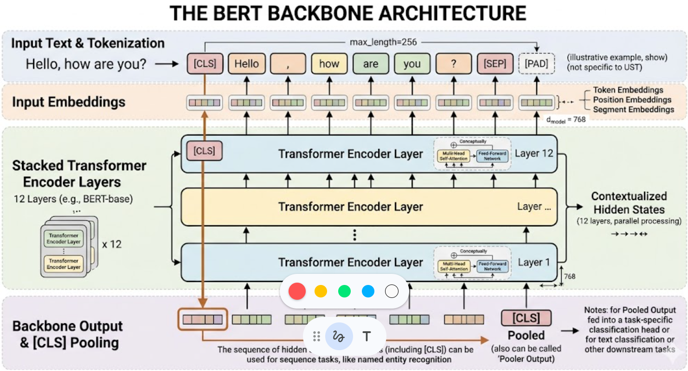

BERT Backbone Architecture
Transformer
The BERT classifier uses
bert-base-uncased with WordPiece tokenization,
input embeddings, and 12 stacked Transformer encoder layers. The pooled
[CLS] representation is passed to a task-specific classifier head.